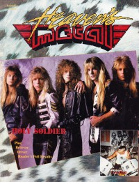

CMnexus
:
Contemporary Christian culture, music, and media.
Magazines
Profiles
Dove Awards
cmnexus.org
CM
nexus
→
Profiles
→
V
→
Doug Van Pelt
Doug Van Pelt
Writing Credits: 9 of 51
< -- Previous
Next -- >
4
5
6
7
8
9
10
11
12
13
Writing credits listing
Feb 1990 in
Heaven's Metal
#23
Holy Soldier
-
Holy Soldier
Fools and Strangers
-
Hardcore Beatnicks
Jason Underground
-
Under an Extra Tent
Seventh Sign
-
demo #2
Canaan
-
Dead End Street
Euroclydon
-
Soul Windows
Mercy Rule
-
Overruled
various artists -
Ultimate Metal
Acceptance (MI)
-
3-song demo
Sabre's Edge
-
5-song tape
Retrace
-
Retrace Live!
Clinic
-
Spread The Fire
Bad Boy Butch Baston
-
Twisted and Bent
Remanant
-
Step In Faith
Petra
-
Petra Praise... The Rock Cries Out
Johnny Spreen
-
Very Raw Unfinished No Mix No Money
Lifeline
-
Cry Hosanna!
Solution
-
Footprints
Whiteray
-
The First Sin
The Lead
-
Burn This Record
Vector
-
Simple Experience
Paul Clark
-
Awakening from the Western Dream
Prophets on Vacation
-
Mosh To Relax To
Crown of Thorns
-
Reach For The Crown
The Mints
-
The Mints
Final Axe
-
Beyond Hell's Gate
Last Adam
-
Tools For the Harvest
Charizma
-
Join Hands
various artists -
Underground Metal 2
Petra
-
Petra Means Rock
Mar 1990 in
CCM
12.9
Holy Soldier
-
Holy Soldier
Apr 1990 in
CCM
12.10
Vengeance Rising
-
Once Dead
New Faces:
Holy Soldier
Leviticus
-
Knights of Heaven
DeGarmo and Key
, various artists -
Take the Pledge [Video]

Apr 1990 in
Heaven's Metal
#24
"In The Trenches With Holy Soldier"
Holy Soldier
"Getting A Grip on The Crucified"
The Crucified
"Thrashing About With Believer"
Believer
"Rockin' With Driver"
Driver
Vengeance Rising
-
Once Dead
Most High
-
4-song demo
Lex Rex
-
Beat the Heat
Armageddon
-
The Money Mask
Sekel
-
The Final Conflict
Red Ink
-
Raw Meat
The Crucified
-
The Crucified
various artists -
Heavy Righteous Metal Chapter II
The Throes
-
The Era of Condolence
Michael Gleason
-
Children of Choices
Halo
-
Halo
Writing Credits: 9 of 51
< -- Previous
Next -- >
4
5
6
7
8
9
10
11
12
13
CMnexus
(noun)
The magazine index
of modern music
and Christianity
© 2011 CMnexus. Last updated May 2025.
Contact:
Rants and other correspondence to:
editor -AT- cmnexus
-DØT- org
About